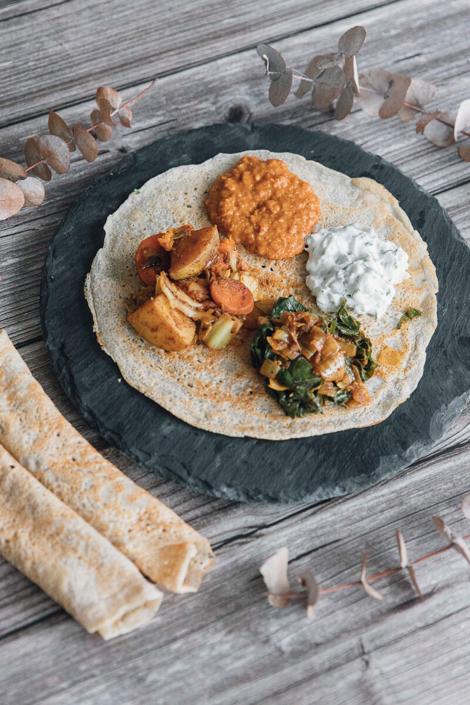
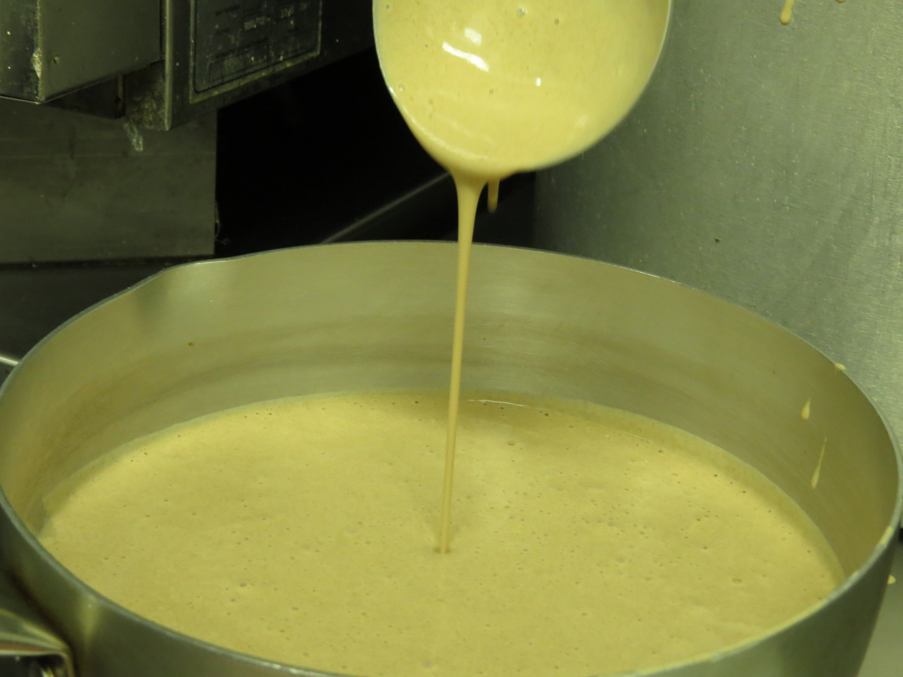
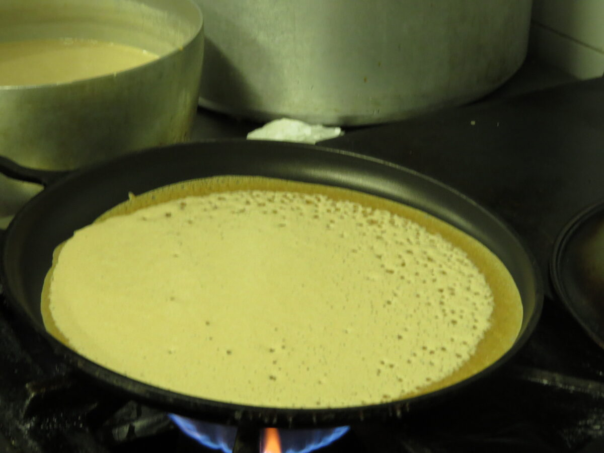

Injera etíope con daal de lentejas rojas

Conocí la cocina etíope gracias a una ONG con la que colaboré durante años.
Aquella experiencia me acercó a una forma de cocinar muy distinta a la que conocía hasta entonces: sencilla, nutritiva y profundamente compartida. Con el tiempo tuve la suerte de participar también en la elaboración de un libro de recetas etíopes, y desde entonces la injera ocupa un lugar muy especial en mi cocina.
Es uno de esos platos a los que siempre vuelvo cuando necesito sentirme nutrida, con energía y en calma.
Por qué ocupa un lugar especial en mi cocina
La injera es el pan tradicional de Etiopía y se elabora con harina de teff, un cereal ancestral naturalmente sin gluten, rico en fibra, hierro, calcio y proteínas de gran calidad.
Lo que más me enamoró fue su forma de servirse. La injera hace de plato, de pan y también de cubierto. Sobre ella se colocan diferentes preparaciones —verduras, legumbres o guisos especiados— y cada persona va rompiendo pequeños trozos para compartir la comida.
Mi acompañamiento favorito es este daal de lentejas rojas, pero te animo a jugar con las verduras y los guisos que más te gusten. Es una receta que invita a compartir y que siempre admite nuevas combinaciones.
La harina de teff puede encontrarse fácilmente en la mayoría de herbolarios y tiendas de alimentación ecológica.
Injera
Ingredientes
- 250 g de harina de teff
- 250-300 ml de agua
- 1 cucharada de masa madre (o una pizca de levadura fresca)
- Sal
Preparación
- Mezcla la harina con el agua hasta obtener una masa ligeramente más espesa que la de unas crêpes.
- Añade la masa madre y deja fermentar entre 24 y 72 horas, hasta que aparezcan burbujas y adquiera un aroma ligeramente ácido.
- Ajusta la textura con un poco más de agua si fuera necesario.

- Cocina en una sartén antiadherente caliente, como una crêpe, pero solo por un lado. Cuando la superficie esté llena de pequeños agujeros y la masa esté cocinada, retírala y deja enfriar.

Daal de lentejas rojas
Este daal es una de esas recetas que preparo cuando necesito cuidarme. Cremoso, aromático y muy reconfortante, combina a la perfección con la injera y convierte una comida sencilla en un plato lleno de sabor.
Ingredientes (4 personas)
- 250 g de lentejas rojas (lenteja coral)
- 1 cebolla picada finamente
- 2 dientes de ajo picados
- 1 cucharadita de jengibre fresco rallado
- 1 vaso de tomate triturado (o 1 tomate maduro picado)
- 400 ml de leche de coco
- 250 ml de caldo de verduras o agua
- 1 cucharadita de comino
- 1 cucharadita de curry
- ½ cucharadita de cúrcuma
- Sal al gusto
- Aceite de oliva virgen extra
- Cilantro fresco y zumo de limón para servir
Preparación
- Sofríe la cebolla con un chorrito de aceite de oliva hasta que esté transparente.
- Añade el ajo y el jengibre y cocina un minuto más.
- Incorpora el comino, el curry y la cúrcuma y remueve unos segundos para que las especias desprendan todo su aroma.
- Añade las lentejas, el tomate, la leche de coco y el caldo.
- Cocina a fuego suave durante unos 20 minutos, removiendo de vez en cuando, hasta obtener una textura cremosa.
- Ajusta de sal y termina con cilantro fresco y unas gotas de zumo de limón.
¿Qué me hace volver a esta receta?
Porque me sienta bien, me nutre y nunca me deja pesada.
Porque el teff y las lentejas forman una combinación sencilla y muy completa desde el punto de vista nutricional. Aportan proteína vegetal de calidad, fibra, hierro, calcio y una energía estable que me acompaña durante horas.
Y porque cada vez que preparo una injera recuerdo que la comida también puede ser una forma de compartir. En Etiopía todos comen del mismo plato, rompiendo pequeños trozos de pan para recoger las distintas preparaciones. Una tradición sencilla que siempre consigue hacerme sonreír.
Hay recetas que cocino para alimentarme.
Esta también la cocino para volver a un lugar que dejó huella en mí.